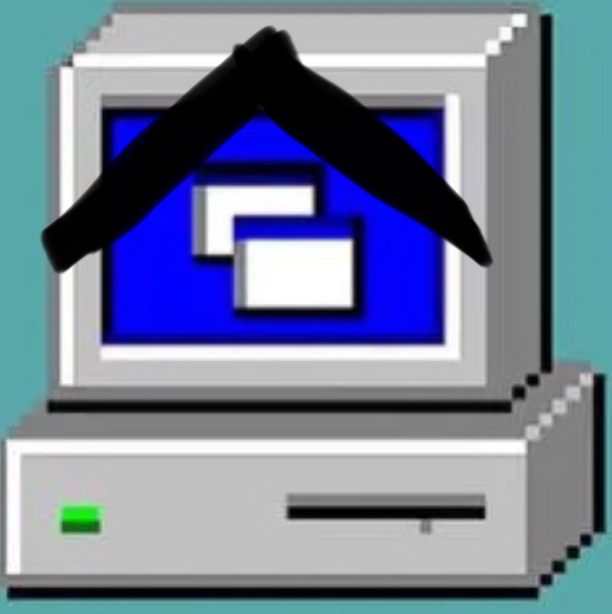

KunOS系统_HelloPgrmm
正在启动KunOS
坤坤马上来到，请稍后……
菜单
SftM
新建
我的
NoDateOfThisText404

我的小脑
扫雷.exe
语言设置.exe
命令提示符.exe
好玩的.exe
好玩的(有害版).exe
蓝屏盖.exe
蓝屏盖(有du的盖).exe
KunOS虚拟坤
KunOS Internet
Minecraft网页版
BLOCKS
KunOS Player
关于KunOS.txt
Dont afraid me
I am a snail
KunOS智能回答小助手
×
❏
_
我的小脑
×
❏
_
KunOS扫雷游戏
×
❏
_
KunOS虚拟机
重启虚拟机
启动虚拟机
选择镜像
KunOS 1K25(4.0.25) New User Interface
[番外]Windows 93
KunOS 3.24.7
×
语言设置
选择语言：
选择完一些语言后，系统可能需要重启才能生效。
×
❏
_
Minecraft网页版
×
❏
_
BLOCKS
×
❏
_
关于KunOS.txt
========关于KunOS的一些信息==========
灵感来源：Windows93.net
这是一个网页版的“系统”，目前还不能进行创建文件等操作，敬请原谅
（在本系统中，窗口是可以拖动的，只要将鼠标放在标题栏那边，按住鼠标就可以拖动了）
网页版本：1K25(新窗口UI内测版)
基于HTML/CSS/JavaScript/jQuery内核
[新UI内测提示]
本版本是对KunOS新的窗口UI方案的一个测试和用户体验，目前已经将大部分窗口UI重新设计。少部分窗口可能还是KunOS Classic Original主题的窗口，请等待正式版统一UI。
以下软件是引用了一些别的网站，这里列举：
网页版Minecraft：https://goro.top/WebMC/
扫雷游戏：https://hellopgrmm.github.io/nifs/mines.html
×
❏
_
KunOS Terminal
×
❏
_
KunOS Internet
跳转！
×
❏
_
KunOS Player
×
❏
_
新建文件
关闭
密码设置
设置/修改您的安全密码（留空代表取消密码）
确认修改
×
❏
_
帐户设置
个人信息
KunOS_User
设置新的用户名>>
恢复原来的用户名>>
Kun币个数:
0
个
[通过等待来获取3枚Kun币]
[什么是Kun币]
安全
设置您的密码
好的密码可以保护您的电脑，防止信息泄露，设置一个记得住的密码。
密码:未设定
设置密码
内存
存储空间:
0
MB/1000MB
重新计算
个性化
设置背景图片
或者输入图片网址以作为背景：
更换背景
设置
1.阻止任何大音量干扰
(
Undef
)
×
❏
_
智能回答小助手
关闭
修改用户名
设置/修改您的用户名
确认修改
你想要......
重新启动KunOS
进入KunOS Terminal
关闭
该KunOS设置了用户口令。
请输入用户口令:
确定口令
 坤坤马上来到，请稍后……
坤坤马上来到，请稍后……